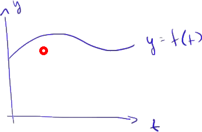
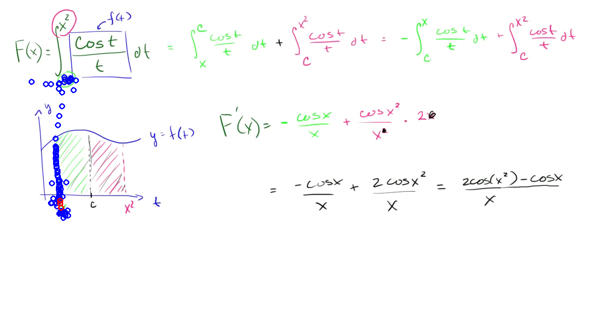
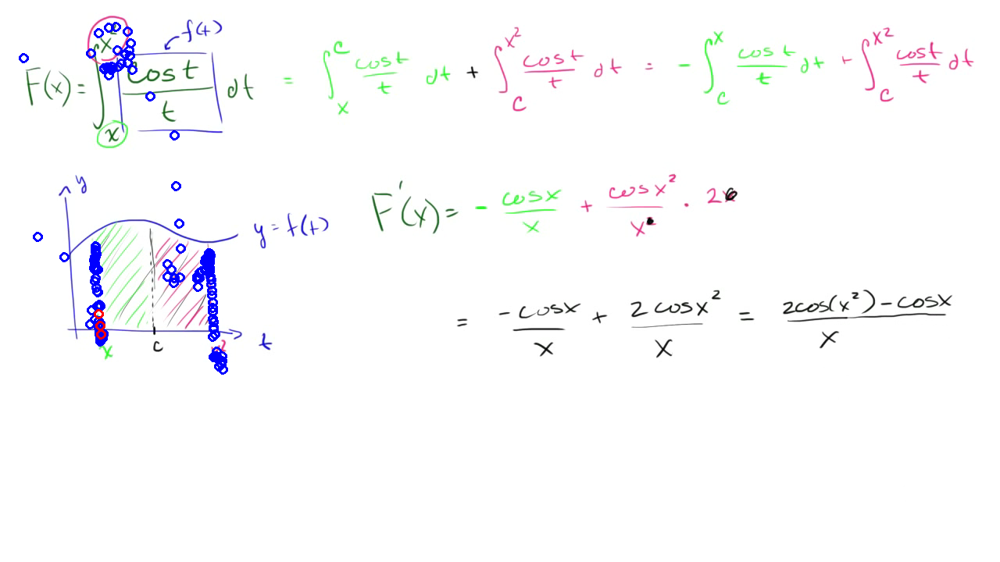
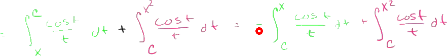

So let's see if we can take the derivative of this expression right over here, if we can find capital F prime of x.
And once again, it looks like you might be able to use the fundamental theorem of calculus.
A big giveaway is that you're taking the derivative of a definite integral that gives you a function of x.
But here I have x on both the upper and the lower boundary, and the fundamental theorem of calculus, is at least from what we've seen, is when we have x's only on the upper boundary.
And then, of course, it's an x squared, but we've seen examples of that already when we used the chain rule to do it.
But how can we break this up and put this in a form that's a little bit closer to what we're familiar with when we apply the fundamental theorem of calculus?
And to realize that, we really just have to attempt to graph what this is representing.
So let's say that this is our lowercase f of x, or I should say f of t.
So let's call this lowercase f of t.
And let's graph it over the interval between x and x squared.
So let's say this is my y-axis.
This is my t-axis.
And let's say that this right over here is y is equal to f of t.
I'm drawing it generally.
I don't know what this exactly looks like.
And we're going to talk about the interval between x and x squared.
So if we're going to talk about the interval between x, which is right over here, it's the lower bound, so x and x squared.
It's the lower bound, at least for this definite integral.
We don't know for sure.
It depends on what x you choose on which one is actually smaller.
But let's just say that for the sake of visualizing, we'll draw x right over here, and we will draw x squared right over here.
So this whole expression, this entire definite integral, is essentially asking for, is essentially representing this entire area, the entire area under the curve.
But what we could do is introduce a constant that's someplace in between x and x squared.
Let's say that constant is c, and break this area into two different areas with c as the divider.
So that same exact whole area we can now write it as two separate integrals.
So one integral that represents this area right over here, and then another integral that represents this area right over there, and where we just say c is some constant between x and x squared.
Well, how can we denote this area in purple?
Well, that's going to be-- So this thing is going to be equal to the sum of these two areas.
The purple area we can show is the definite integral from x to c of our function of t, cosine t over t dt.
And then to that we're going to add the green area.
And then we'll get the original area.
So for the green area, our lower bound of integration is now our constant c, and our upper bound of integration is x squared, and it's going to be of cosine t over t dt.
And this is a form where, if we know how to apply the chain rule, we can apply the fundamental theorem of calculus.
And this is almost in a form.
We're used to seeing it where the x is the upper bound.
And, well, we already know what happens.
We can swap these two bounds, but it'll just be the negative of that integral.
So this is going to be equal to-- let me rewrite it-- the negative of the definite integral from c to x of cosine t over t dt.
And then we have plus the definite integral that goes from c to x squared of cosine t over t dt.
So all we've done is we've rewritten this thing in a way that we're used to applying the fundamental theorem of calculus.
So if we want to find F prime of x, well, applying the derivative operator over here, we're going to have a negative out front.
It's going to be equal to negative cosine x over x.
Once again, just the fundamental theorem of calculus.
And then plus-- we're first going to take the derivative of this thing with respect to x squared, and that's going to give you cosine of x squared over x squared.
Wherever you saw t, you replace it with an x squared.
And then you're going to multiply that times the derivative of x squared with respect to x.
So that's just going to be-- derivative of x squared with respect to x is just 2x.
And we're done.
We just need to simplify this thing.
So all of this is going to be equal to negative cosine x over x plus-- well, this is going to cancel out with just one of those-- plus 2 cosine x squared over x.
And I guess we could simplify it even more as being equal to-- and we can swap these-- everything over x 2 cosine of x squared minus cosine of x.
And we are done.